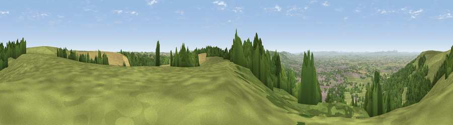

Viewpoint near Prestbury
#3657 in England · top 10% of its area beats it · near PrestburyThe view, rendered

A 360° render of this exact spot computed from the terrain model, tree cover and land cover — summer colours, afternoon light, calibrated against photographs of famous viewpoints. Real trees, hedges and buildings will differ in detail.
The panorama
Grey silhouette: terrain skyline in each direction (720 bearings, Earth curvature and refraction included). Dashed green: skyline with trees (+15 m) and buildings (+8 m) as obstacles. Blue strip: how far the ground is visible on each bearing.
Where the view opens
Wedge length = distance to the farthest visible ground on that bearing (vegetation-aware). Rings at 10, 25 and 50 km.
What fills the view
45% grassland · 36% woodland · 10% cropland · 8% built-up
Angular shares of the visible panorama (visual magnitude), not map area. Landscape diversity 0.51 (0–1 Shannon).
Key numbers
More beautiful places nearby
The staircase of upgrades: each row has a higher view potential than everything closer. Driving times are estimates from straight-line distance, calibrated against real road routing — check an actual route before setting out.
| Place | Direction | Drive | Score |
|---|---|---|---|
| Viewpoint near Cleeve Hill | N · 1 km | ~3 min | 74.9 |
| Viewpoint near Cleeve Hill | NNW · 2 km | ~5 min | 79.6 |
| Cleeve Hill | NNW · 3 km | ~6 min | 79.8 |
| Nottingham Hill | NNW · 5 km | ~10 min | 80.9 |
| Viewpoint near Bredon's Norton | NNW · 16 km | ~29 min | 81.3 |
| Bredon Hill | NNW · 17 km | ~29 min | 83.0 |
| Millennium Hill | NW · 28 km | ~44 min | 86.9 |
| Worcestershire Beacon | NW · 31 km | ~48 min | 87.1 |
51.91430, -2.01267 · source: screening · position refined by local search. Computed location — check access rights before visiting.